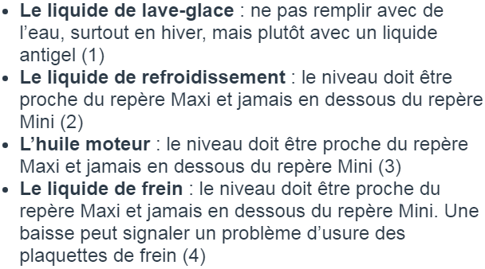
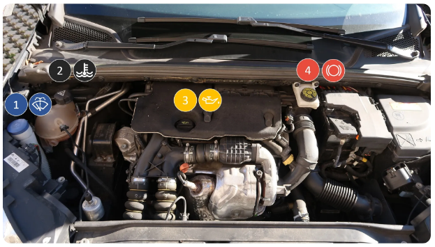
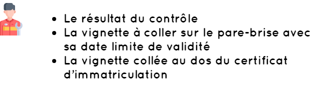

Un véhicule bien entretenu est un véhicule qui aura une durée de vie plus longue.
L’entretien de son véhicule commence par la vigilance du conducteur.
En tant que conducteur, vous vous devez d’être attentif au moindre détail
et contrôler régulièrement l’état du véhicule ainsi que les différents niveaux.
Pensez à vérifier régulièrement l’état, la propreté et le fonctionnement des éléments extérieurs :
Les voyants qui s'allument sur le tableau de bord constituent une aide très importante pour le conducteur. Connaître leur signification est donc indispensable.
Le contrôle de niveau des liquides doit s’effectuer sur SOL PLAT (pour ne pas fausser les mesures) et MOTEUR ARRÊTÉ depuis quelques minutes (pour éviter le risque de brûlure). Le contrôle des niveaux doit s'effectuer au moins une fois par mois.
Les différents liquides à vérifier sont :
 En cas de baisse significative du niveau de liquide de frein, vous pouvez en remettre par vous-même, mais il est important d'aller chez le garagiste pour vérifier l'absence de fuite.
Afin de préserver l’état des freins de votre véhicule, pensez à utiliser le frein moteur en cas de longue descente. Pour utiliser le frein moteur, rétrograder à la vitesse inférieure.
Les visites techniques sont un passage obligatoire à effectuer pour s’assurer que le véhicule fonctionne correctement. Le respect des dates limites pour effectuer ces contrôles est donc essentiel.
La révision doit généralement être effectuée tous les 20 000 km. Cette visite permet d’effectuer des actions d’entretien comme la vidange ou le remplacement des filtres.
Le contrôle technique doit être effectué de cette manière :
Une fois le contrôle effectué, le propriétaire du véhicule reçoit immédiatement un procès-verbal avec :
Bon courage pour votre code !